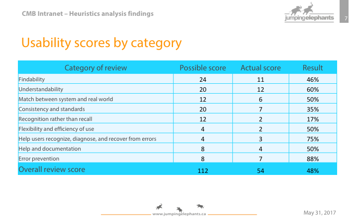
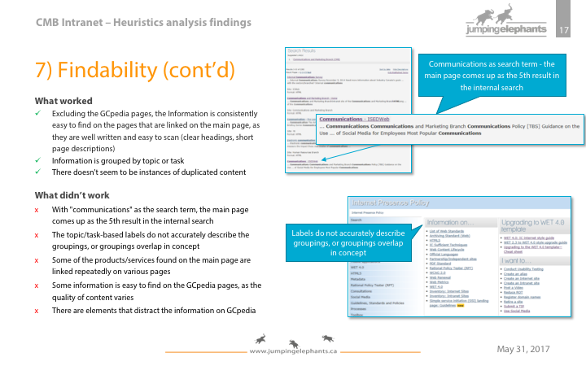
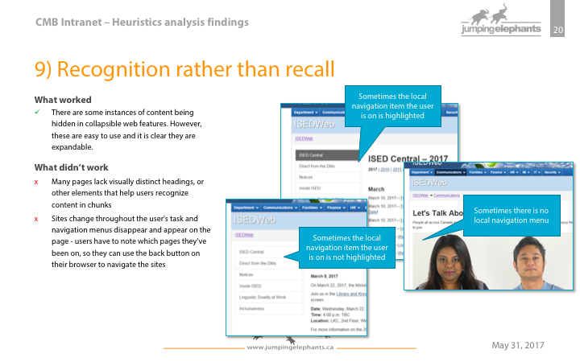

The Store
Client: Innovation, Science and Economic Development Canada (ISED), Communications and Marketing Branch
Timeline: 2 months
Tools: Adobe Illustrator, Excel, PowerPoint
My contribution: Heuristics analysis, information architecture and wireframes development, and reporting
Team: An information architect, a project manager, a content writer, and myself
Project Overview
‘The Store’ is the name of Innovation, Science and Economic Development Canada’s (ISED) new intranet site for the Communications and Marketing Branch (CMB). CMB supports ISED by providing products, services, and information regarding all channels of communication. CMB aimed to consolidate the various intranet sites to one site, to provide one single location for CMB-related information. They needed a new information architecture (IA) to organize the content and “not-so-government” wireframes to make the content come alive.
Challenges
- CMB’s content was interspersed throughout three different intranet sites, which made it challenging to assess what needed to be organized.
- Because there wasn’t a unified intranet presence, CMB’s clients couldn’t easily understand CMB’s role at ISED and what it could (and could not) do for them.
- CMB offers a wide array of products and services, making it difficult to create a succinct IA.
- CMB had previously conducted Treejack testing on a draft IA on potential users. But, other than this piece of user research, there wasn’t much on which to base the design of the IA.
Outcomes
- A heuristics evaluation was conducted to outline usability issues to avoid on the new site
- An information architecture up to four levels was developed for a single
- Wireframes up to three levels was developed
- Recommendations on content management and intranet design were delivered
Heuristics Analysis
CMB’s content and presence on three different intranet sites was a major usability issue. It required users to learn how to use and search for information on more than one site. Additionally, if users needed to find the same information again (a common task on intranet sites), it was difficult to remember where they had found the information last.
A heuristics analysis revealed additional usability issues to avoid in the design. Key findings included:
- Navigation elements disappear and appear on the page
- Users have to rely heavily on the browser’s back button to navigate the sites
- None of the three intranet sites provide users a way to return to the CMB main page
- Pages are difficult to scan
- The main page does not place high enough on the internal search
- Content does not provide users with a clear next step
The project report included these slides on the heuristics analysis:
  Information Architecture
An information architecture with nine top-level topics were developed after reviewing the Treejack results and conducting the heuristics analysis.
These topics were designed to:
- Collect or group the main tasks and sub-topics into logical clusters or groups;
- Be plain language and reflect the terms that users would use to find the topics;
- Be mutually exclusive to each other, as much as possible, (ex. allow users to be certain that the topic they choose will exclude the topics (and the possible sub-topics) they didn’t choose).
These are the topics users will see on the main page and topics that will serve as the CMB navigation menu when users are not on the main page.
IA Top Levels:
- Publishing
- Video & Photography
- Graphic design
- Content & Translation
- Marketing
- Handling Inquiries
- Research
- News and Events
- Parliamentary Affairs
Wireframes
Wireframes are used in a project to identify how the navigational, visual, and textual elements of a new site will fit together.
(Click to enlarge)
What I learned
- The wireframe is not just a useful tool in communicating concepts to clients, but also to team members. Because UX is a new field of practice, much of the language we use are vague and ambiguous (top levels, wireframes, etc.) to clients and other UX experts. Wireframes provide a clear indication of what is being communicated. Quicker and snappier the wireframe, the better.